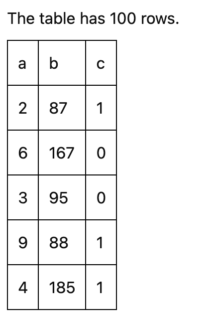

Creating a Component#
To create a new component, you can use a Python cookiecutter to get started, which provides the base code and boilerplate.
pip install cookiecutter
cookiecutter widget-cookiecutter/
The cookiecutter will guide you in filling out the necessary fields.
Warning
Your component name should be in the form of My Custom Component. In turn, the identifier should be automatically prefixed with Symphony,
e.g., SymphonyMyCustomComponent.
Additionally, the npm package should be the identifier separated by dashes (symphony-my-custom-component) and the python package
separated by underscores (symphony_my_custom_component).
Then install your component (using the -e` “editable” flag for development).
cd symphony_my_custom_component
pip install -e .
If you start a Jupyter notebook and open the example notebook in /examples, you should see a simple component showing the size of a table!
If you run the export(...) cell, you can also run yarn dev in the terminal to see the component as a standalone dashboard.
Any changes you make to the frontend code will trigger a re-build, where you can refresh to see the changes.
Background#
To customize a newly created component, the primary file to work in is src/[Your Provided Component Name].svelte.
Components are written in Svelte. See their interactive tutorial for a concise overview of the basics.
When customizing a component, you have access to all variables in the Symphony state.
To learn more about what each state variable is, see the Symphony State documentation.
Data tables are also stored as Arquero tables, a columnar data API with transformations similar to Python Pandas or Apache Arrow.
The official Arquero documentation is a great resource for working with tables.
Components can access helpers and UI elements from the symphony_lib npm package. To learn more about available UI elements, see Common Functionality.
Development#
Assuming you have set up a development environment with Symphony and all its requirements installed (if not, see Contributing), in the component directory install and build all npm dependencies:
yarn
yarn build
Next, install the widget for Jupyter Notebook development. Within the component directory, run:
pip install -e .
Then, test if the widget works using the example Jupyter Notebook within the examples folder by running:
jupyter notebook
To watch for changes in Jupyter Notebook, run:
yarn watch
To watch for changes in Jupyter Lab, in another terminal window you also have to run:
jupyter labextension watch
Then, refresh your browser to see any changes.
Lastly, to watch your changes and test your widget in a standalone app, run:
yarn dev
For this to work, you need to call export once from the notebook.
Example: Creating a Simple Table Component#
Let’s create a simple table component that behaves similar to Pandas’ df.head().
The main file for building a component is src/[Your Provided Component Name].svelte.
As you make changes to this file, there are two ways to see your component:
Run
yarn watchand refresh the Jupyter Notebook.Run
yarn devand refresh the static website.
Note that you must have run symph.export("../symphony_my_custom_component/standalone") from the examples folder at some point in order for yarn dev to work.
At the top of the file, we can see all the data that is available to each component:
export let filter: WidgetWritable<string>;
export let filterError: WidgetWritable<string>;
export let table: Readable<ColumnTable>;
export let symphonySpec: WidgetWritable<SymphonySpec>;
export let groupColumns: WidgetWritable<string[]>;
export let groupNames: WidgetWritable<string[][]>;
export let groupedTables: Readable<ColumnTable[]>;
export let filteredTable: Readable<ColumnTable>;
export let selected: WidgetWritable<string[]>;
export let tooltip: WidgetWritable<TooltipSpec>;
export let showRaw: WidgetWritable<boolean>;
And we see how the component currently shows the size of the table:
<div>
The table has {$table.size} rows.
</div>
To start our table, we create a header row with the name of each column:
<table>
<thead>
{#each $filteredTable.columnNames() as columnName}
<td>{columnName}</td>
{/each}
</thead>
</table>
And for the body, we sample 10 rows and show their values:
<tbody>
{#each $filteredTable.slice(0, 5).objects() as row}
<tr>
{#each Object.keys(row) as colKey}
<td>{row[colKey]}</td>
{/each}
</tr>
{/each}
</tbody>
The resulting code would then be:
<table>
<thead>
{#each $filteredTable.columnNames() as columnName}
<td>{columnName}</td>
{/each}
</thead>
<tbody>
{#each $filteredTable.slice(0, 5).objects() as row}
<tr>
{#each Object.keys(row) as colKey}
<td>{row[colKey]}</td>
{/each}
</tr>
{/each}
</tbody>
</table>
After some CSS, you should see something similar to the following table:
{kind=link}